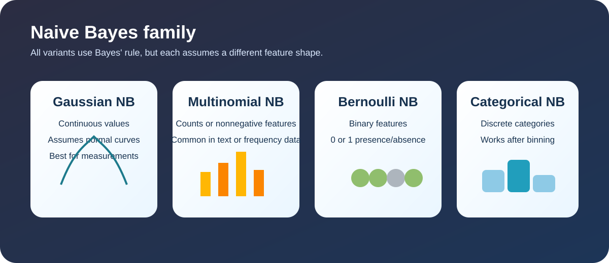
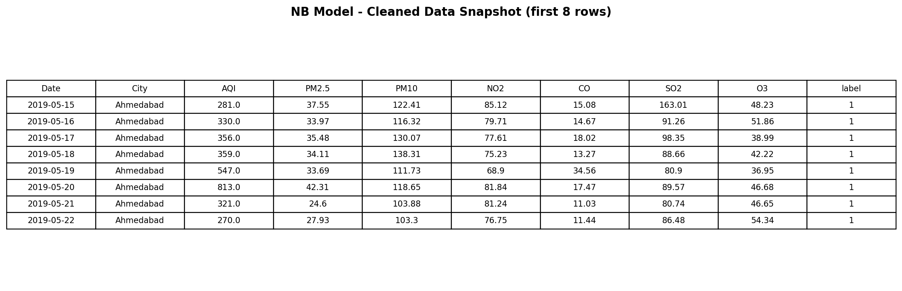
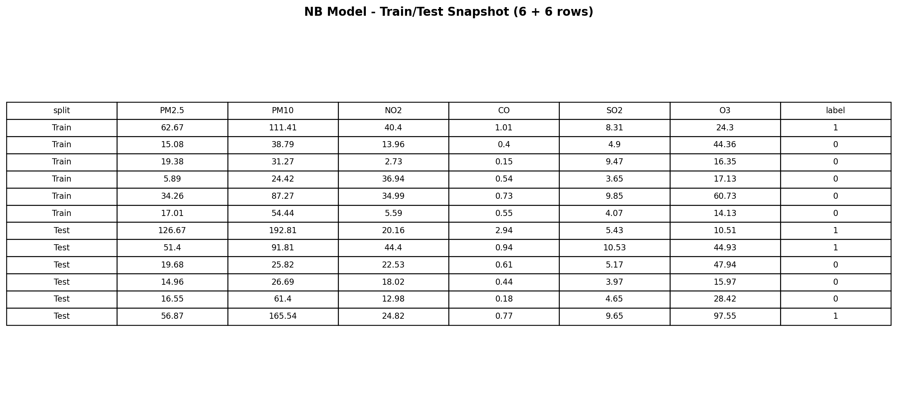
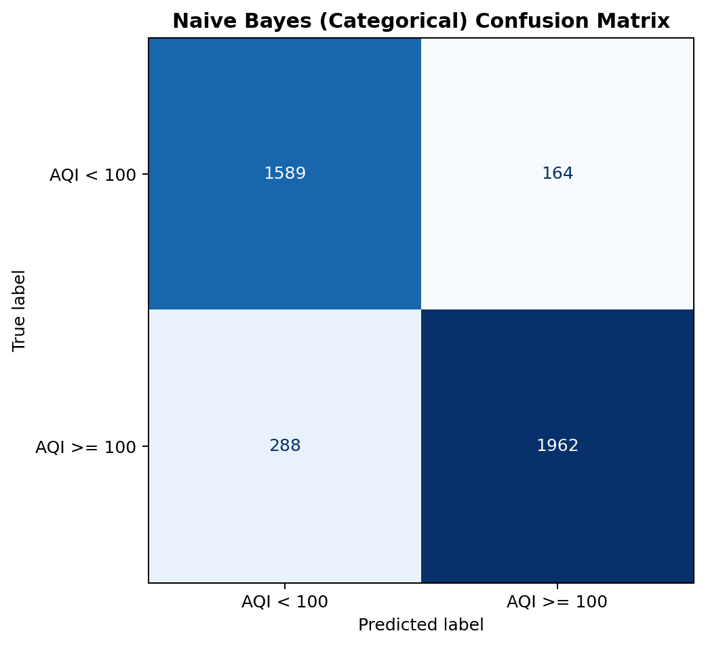

Naive Bayes (NB)
Overview
Naive Bayes is a family of classification methods based on Bayes' rule. It is called "naive" because it assumes the input features are conditionally independent once the class is known, which is a simplifying assumption that often works surprisingly well. It is fast, easy to interpret, and especially useful when you want a strong baseline for text, frequency, or discretized data.

Use for continuous values that look approximately normal.
Use for counts or nonnegative frequencies, such as word counts.
Use for binary features that are either present or absent.
Use for discrete categories after binning or encoding.
For this project, Multinomial NB is the required version, and it is paired with two other flavors so the comparison is more meaningful. Gaussian NB is a natural choice for continuous pollutant measurements, Bernoulli NB works well after turning a feature into a yes/no indicator, and Categorical NB can be used after discretizing the values into bins.
Smoothing (Laplace / alpha)
Naive Bayes uses smoothing so unseen feature values do not force a class probability to zero. In practice, a small constant alpha is added to each count: P(feature | class) = (count + alpha) / (total_count + alpha * number_of_features). With alpha > 0, the model remains numerically stable and generalizes better when rare pollutant patterns appear in test data.
In this portfolio, this matters most for Multinomial, Bernoulli, and Categorical NB variants because they estimate probabilities from counts or binned frequencies.
Data Prep
Supervised learning needs labeled data, so the code creates a binary label using AQI >= 100 and then splits the frame into a training set and a testing set. The split is disjoint on purpose: the training set teaches the model pattern recognition, while the testing set checks whether those patterns generalize to unseen rows.

The prepared feature set contains 16,010 complete rows from the AQI dataset using PM2.5, PM10, NO2, CO, SO2, and O3. The same base table can be transformed differently for each Naive Bayes flavor, which is why the code keeps the preprocessing steps explicit instead of forcing every model into the same format.

Snapshot of cleaned data used for NB modeling.

Snapshot of train and test rows used for NB evaluation.
Code
The complete Python workflow is in module3_models.py. It loads the AQI data when available, creates the label, performs the train/test split, and evaluates Multinomial NB, Bernoulli NB, Gaussian NB, and Categorical NB.
from sklearn.naive_bayes import MultinomialNB, BernoulliNB, GaussianNB, CategoricalNB from sklearn.model_selection import train_test_split # Data is prepared once, then transformed per model. # Multinomial NB uses nonnegative values. # Bernoulli NB uses binary features. # Gaussian NB uses continuous measurements. # Categorical NB uses discretized bins.
Results
The script was validated in the current workspace on the attached AQI dataset. These are the measured outputs from that run, and they show that the choice of feature format has a real effect on performance.

User-friendly confusion matrix visualization for the NB model (Categorical NB variant).
| Model | Accuracy | Confusion Matrix |
|---|---|---|
| Multinomial NB | 0.6860 | [[1264, 489], [768, 1482]] |
| Bernoulli NB | 0.8808 | [[1584, 169], [308, 1942]] |
| Gaussian NB | 0.8504 | [[1704, 49], [550, 1700]] |
| Categorical NB | 0.8871 | [[1589, 164], [288, 1962]] |
Categorical NB and Bernoulli NB were the strongest Naive Bayes variants on this data, while Multinomial NB was the weakest because the AQI features are continuous pollution measurements rather than true counts. That is useful for the assignment because it shows why the preprocessing choice matters as much as the algorithm.
Conclusions
Naive Bayes is useful here because it gives a clean comparison across multiple data formats without requiring a very heavy model. The main takeaway is that the data representation matters as much as the algorithm itself: the same AQI table can lead to different behavior depending on whether the values are treated as counts, continuous values, or categories.